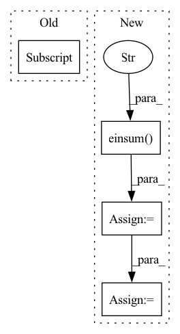

Pattern ID :29960
Before Change
f = fun(p)
j = jac_fun(p)
g = torch.bmm(j.transpose(-2, -1), f[..., None])[..., 0]
H = torch.bmm(j.transpose(-2, -1), j)
p_list = [p]
while len(p_list) < max_iter:
h = -l*torch.linalg.lstsq(H, g, rcond=None, driver=None)[0]//-l*torch.bmm(torch.pinverse(H), g)[..., 0]//After Change
// compute gradient and Hessian costs
gc = torch.einsum("bcnp,bcnp->bcp", j, f[..., None])
Hc = torch.einsum("bcnp,bcni->bcpi" , j, j)
// reduce multiple costs dimension through weighting
g = torch.einsum("bcp,c->bp", gc, wvec)
H = torch.einsum("bcpi,c->bpi", Hc, wvec)
p_list = []
while len(p_list) < max_iter:
h = -l*torch.linalg.lstsq(H, g, rcond=None, driver=None)[0]
p = p + h
p_list.append(p.detach())
f_prev = f.clone()
f = fun(p)
j = jac_fun(p)
gc = torch.einsum("bcnp,bcnp->bcp", j, f[..., None])
Hc = torch.einsum("bcnp,bcni->bcpi", j, j)
g = torch.einsum("bcp,c->bp", gc, wvec)
H = torch.einsum("bcpi,c->bpi", Hc, wvec)
// stop conditions
gcon = torch.max(abs(g)) < gtolIn pattern: SUPERPATTERN
Frequency: 4
Non-data size: 4
Instances Fragment ID: 88816267
Project Name: hahnec/torchimize
Commit Name: 71d4a553c258e912862f87311fc88cd5cadb49d1
Time: 2022-05-16
Author: christopher.hahne@unibe.ch
File Name: torchimize/functions/gna_fun_parallel.py
M Class Name: AnonimousClass
N Class Name: AnonimousClass
M Method Name: lsq_gna_parallel(10)
N Method Name: lsq_gna_parallel(9)
M Parent Class:
N Parent Class:
M File Name: torchimize/functions/gna_fun_parallel.py
N File Name: torchimize/functions/gna_fun_parallel.py
M Start Line: 43
M End Line: 56
N Start Line: 12
N End Line: 73
Before Change
u_hat = torch.einsum("ijk, jkl -> ijl", x, self.route_weights)
// Dynamic route
b = torch.zeros(x.shape[1] , self.num_capsules, requires_grad=True)
for it in range(self.num_iterations):
c = b.softmax(dim=-1)
After Change
// Last iteration with original u_hat to pass gradient
c = b.softmax(dim=1)
s = torch.einsum("ijk, ijkl -> ijl" , c, u_hat_temp)
v = squash(s)
return v
Fragment ID: 88816282
Project Name: riroaki/capsnet
Commit Name: 408b1e77f4e40589def9c313c0b11beaa88f2108
Time: 2020-03-08
Author: aki@akideMacBook-Pro.local
File Name: capsnet.py
M Class Name: DigitCaps
N Class Name: DigitCaps
M Method Name: forward(2)
N Method Name: forward(2)
M Parent Class: nn.Module
N Parent Class: nn.Module
M File Name: capsnet.py
N File Name: capsnet.py
M Start Line: 47
M End Line: 64
N Start Line: 52
N End Line: 84
Before Change
// Recombination of the new mean.
old_mean = self.mean
self.mean = np.sum(parents * weights[:, None] , axis=0)
// Update the evolution path.
y = self.mean - old_meanAfter Change
// Equivalent to calculating the outer product of each ys[i] with itself
// and taking a weighted sum of the outer products. Unfortunately, numba
// does not support einsum.
rank_mu_update = np.einsum("ki,kj" , weighted_ys, ys)
c1a = c1 * (1 - (1 - hsig**2) * cc * (2 - cc))
self.cov.cov = self._calc_cov_update(self.cov.cov, c1a, cmu, c1,
self.pc, self.sigma,
rank_mu_update)
Fragment ID: 88816232
Project Name: icaros-usc/pyribs
Commit Name: d2b586573e07e26fb33d9527e48a47d9f1d14b5d
Time: 2021-01-22
Author: bryon@btjanaka.net
File Name: ribs/emitters/opt/_cma_es.py
M Class Name: CMAEvolutionStrategy
N Class Name: CMAEvolutionStrategy
M Method Name: tell(3)
N Method Name: tell(3)
M Parent Class:
N Parent Class:
M File Name: ribs/emitters/opt/_cma_es.py
N File Name: ribs/emitters/opt/_cma_es.py
M Start Line: 236
M End Line: 268
N Start Line: 252
N End Line: 290
Before Change
wisdom_embeddings = wisdom_embeddings_.squeeze() // (W, H)
// --- draw H_wisdom from H_desc with attention --- //
H_wisdom = self.H_wisdom(H_all, self.hparams["mode"] )
// --- now compare H_wisdom with all the wisdoms --- //
S_wisdom_figurative = torch.einsum("nh,wh->nw", H_wisdom, wisdom_embeddings) // (N, H) * (W, H) -> (N, W)
return S_wisdom_figurativeAfter Change
wisdom_embeddings = wisdom_embeddings_.squeeze() // (W, H)
// --- draw H_wisdom from H_desc with attention --- //
H_k_ = self.H_k(H_all) // (N, L, H) -> (N, K, H)
H_k = torch.einsum("nkh->nhk" , H_k_)
H_wisdom = self.pooler(H_k).squeeze() // (N, K, H) -pooling-> (N, H, 1) -> (N, H)
// --- now compare H_wisdom with all the wisdoms --- //
S_wisdom_figurative = torch.einsum("nh,wh->nw", H_wisdom, wisdom_embeddings) // (N, H) * (W, H) -> (N, W)
return S_wisdom_figurative Fragment ID: 88816268
Project Name: eubinecto/wisdomify
Commit Name: c7ee98a955f7ae9b0ccfabd2365ff494ae523229
Time: 2021-11-23
Author: eubinecto
File Name: wisdomify/models.py
M Class Name: RDGamma
N Class Name: RDGamma
M Method Name: S_wisdom_figurative(2)
N Method Name: S_wisdom_figurative(2)
M Parent Class: RD
N Parent Class: RD
M File Name: wisdomify/models.py
N File Name: wisdomify/models.py
M Start Line: 362
M End Line: 362
N Start Line: 338
N End Line: 340